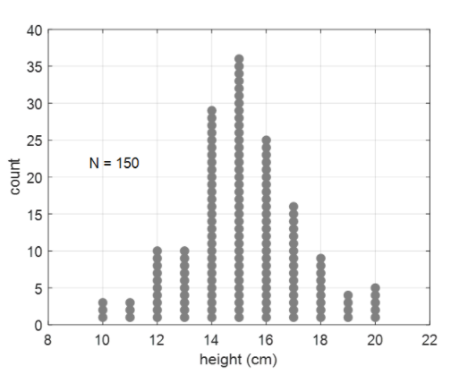
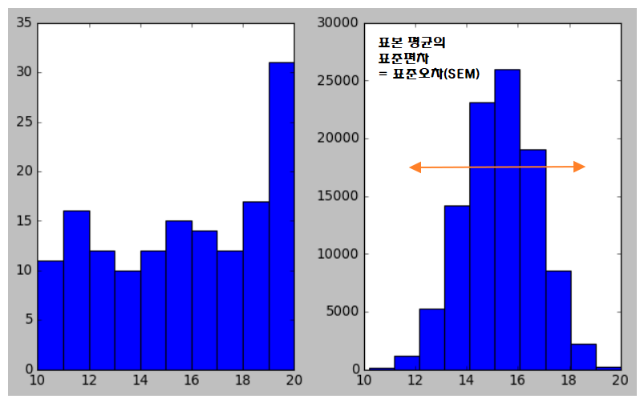
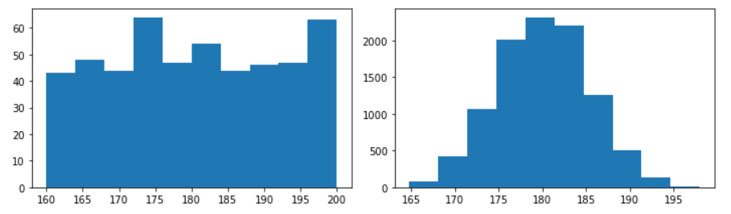
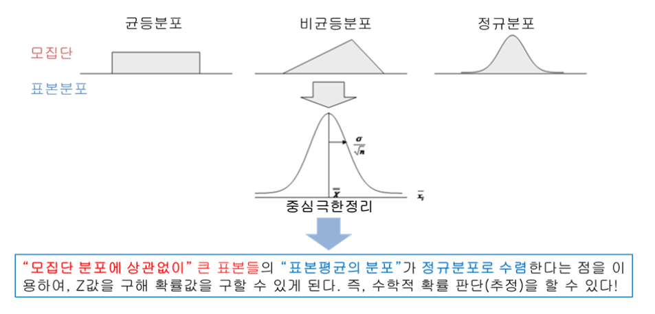

Python 데이터분석을 위한 통계
Data-Science 강의는 여러 절로 구성되어 있습니다.
- Relational Database MySQL(1) - Introduction
- Relational Database MySQL(2) - Install 및 환경설정
- Relational Database MySQL(3) - MySQL 전체 운영 실습
- Relational Database MySQL(4) - Data Modeling
- Relational Database MySQL(5) - MySQL Utility
- Relational Database MySQL(6) - SQL 기본
- Relational Database MySQL(7) - SQL 고급(1)
- Relational Database MySQL(8) - SQL 고급(2)
- Relational Database MySQL(9) - Table & View
- Relational Database MySQL(10) - Index
- Relational Database MySQL(11) - Index 성능비교
- NoSQL Database MongoDB(1) - Introduction
- NoSQL Database MongoDB(2) - NoSQL Data Modeling
- NoSQL Database MongoDB(3) - MongoDB Basic Concept
- Python 데이터분석 라이브러리(0) - Introduction
- Python 데이터분석 라이브러리(1) - NumPy
- Python 데이터분석 라이브러리(2) - NumPy(Exercise)
- Python 데이터분석 라이브러리(3) - Pandas(Series)
- Python 데이터분석 라이브러리(4) - Pandas(DataFrame 생성)
- Python 데이터분석 라이브러리(5) - Pandas(DataFrame indexing)
- Python 데이터분석 라이브러리(6) - Pandas(DataFrame functions)
- Python 데이터분석 라이브러리(7) - Pandas(DataFrame merge)
- Python 데이터분석 라이브러리(8) - Pandas(DataFrame 제어)
- Python 데이터분석 라이브러리(9) - Pandas(DataFrame Grouping)
- Python 데이터분석 라이브러리(10) - Pandas(Exercise)
- Python 데이터분석 라이브러리(11) - matplotlib
- Python 데이터분석을 위한 통계
- Python 데이터분석 라이브러리(12) - seaborn
- Python 데이터분석 라이브러리(13) - folium
Python 데이터분석을 위한 Statistics
여기서는 데이터분석을 위해 기본적으로 알고 가야 하는 몇가지 통계적인 개념들에 대해서 이야기해 보려 합니다. 중요한 개념들을 수학적 표현보다는 이해하기 쉬운 언어와 예제를 이용해 알아보도록 하겠습니다.
- 모집단과 표본집단
- 중심극한정리
모집단과 표본집단
통계학의 가장 기본은 모집단과 표본집단의 이해라고 할 수 있습니다. 고등학교에서 처음 수학을 배울 때 1장이 집합인데 그런 정도의 개념이라고 보시면 됩니다.
그럼 용어부터 하나씩 알아보도록 하죠.
모집단(
population) : 정보를 얻고자하는 관심 대상의 전체 집합
이런 모집단은 매우 추상적이고 실제로 정확히 알 수 없는 경우(우주에 있는 모든 별)가 있습니다. 때로는 직관적이고 실제로 알 수 있는 경우도 존재(우리나라의 인구)합니다.
간단하게 상상속의 모집단을 하나 가정해보죠. 달에 사는 토끼 정도가 적당할 거 같습니다. 달에 토끼가 150마리 산다고 가정하겠습니다.
우리에게 주어진 건 각 토끼의 키를 이용한 분포입니다. 아래 그림처럼 말이죠.

어떤 집단의 분포는 수학적으로 잘 알려진 분포를 따릅니다. 그 중 가장 잘 알려진 분포가 바로
정규분포(Normal Distribution) 혹은 가우스분포(Gaussian Distribution)라고
불리는 분포입니다.
우리가 잘 알다시피 정규분포는 평균값과 표준편차 값을 이용하면 전체적인 형태를 파악할 수 있습니다.
이처럼 모집단의 전체 데이터에 대해 알지 못하더라도 수학적으로 그 분포를 기술할 수 있는 특성값들을 알 수 있다면 얼추 비슷하게 모집단의 특성을 통계적으로 확인할 수 있습니다.
이러한 특성값들을 우리는 모수(Parameter)라고 부릅니다.
대표적인 모수로는 평균, 분산, 표준편차, 분위수 등이 있습니다.
아하..그러니까 우리는 모집단의 전체 데이터를 얻을 수 없으니 모집단의 특성을 나타내는 모수를 파악하여 모집단의 특성을 파악하려 한다는 것이군요!
자 그러면 이 모수(Parameter)를 잘 추정하려면 어떻게 해야 할까요??
이를 알아보기 위해 다른 개념을 조금 더 알아보도록 하겠습니다.
표본(
sample) : 모집단의 부분집합. 모집단의 모수(parameter)를 추정하기 위해서 추출
표본을 추출하는 가장 현실적인 이유는 모집단 전체에 대한 검사를 하기에는 시간적, 금전적 비용이 너무 크기 때문입니다. 전수조사는 너무 힘든일이예요.
추출된 표본들을 통계적으로 기술하기 위해 통계적 특징을 나타내는 수치를 만들어 두면 편할 듯 합니다. 모수(parameter)와 마찬가지로 표본으로부터도 그 분포의 특성을 나타내는 표본 통계량을 계산할 수 있습니다.
대표적인 표본 통계량은 표본 평균, 표본 표준편차, 표본 비율 등이 있습니다.
그런데 문제가 있습니다. 표본을 추출할 때 랜덤하게 추출한다고 가정하면, 표본은 추출할 때 마다 매번 다른 값들로 구성됩니다. 그렇다는 말은 표본들이 매번 추출될 때마다 표본 통계량도 그때 그때 변하게 된다는 의미입니다.
맞습니다. 표본 통계량은 모수(parameter)의 추정치로 볼 수 있으며 추정된 값은
항상 오차(error)를 수반하게 됩니다.
표준 오차 : 표본 통계량의 표준 편차.
표본은 매번 추출될 때 마다 값이 변경되게 되는데 이 때문에 표본 통계량도 매번 그 값에 변동(오차)이 생기게 됩니다.
위 달나라 토끼를 예로 들어 n=5(여기서 n은 1개의 표본안의 토끼수)인 표본을 100,000회
추출하면서 매번 표본의 평균을 계산하여 이를 이용하여
평균의 표준오차(Standard Error of Mean, SEM)를 계산해보도록 하겠습니다.
import numpy as np
import matplotlib.pyplot as plt
fig = plt.figure(figsize=(8,5))
ax1 = fig.add_subplot(1,2,1)
ax2 = fig.add_subplot(1,2,2)
np.random.seed(2)
# 모집단
# 토끼의 키는 10 ~ 20 사이의 정수라고 가정.
# 총 150개의 데이터를 추출.
population = np.random.randint(10,21,(150,)) # 균등분포로 정수추출
# 굳이 정규분포가 아니라도 큰 상관이 없다.
ax1.hist(population, bins=10)
# n=5
# 표본 100,000개 추출하면서 매번 표본의 평균을 계산
sample_space = [np.mean(np.random.choice(population, 5)) for x in range(100000)]
ax2.hist(sample_space, bins=10)
# 표본(의) 평균의 평균을 구해보자.
sample_mean = np.mean(sample_space)
print('표본(의) 평균의 평균 : {}'.format(sample_mean)) # 15.077999999999998
# 분산(variance)은 관측값에서 평균을 뺀 값을 제곱하고,
# 그것을 모두 더한 후 전체 개수로 나눠서 구한다.
# 표준편차는 그렇게 나온 값의 제곱근을 의미한다.
sample_var = np.var(sample_space, dtype=np.float64)
sample_std = np.std(sample_space, dtype=np.float64)
print('표본(의) 평균의 분산 : {}, 표본(의) 평균의 표준편차 : {}'.format(sample_var,sample_std))
sem = np.std(population) / np.sqrt(5)
print('표본(의) 평균의 표준편차(표준오차 : SEM) = 모표준편차 / n의 제곱근')
print('수식을 이용한 표본(의) 평균의 표준편차 : {}'.format(sem))
plt.tight_layout()
plt.show()
# 표본(의) 평균의 평균 : 15.308522
# 표본(의) 평균의 분산 : 2.0940881755159997, 표본(의) 평균의 표준편차 : 1.4470964637908559
# 표본(의) 평균의 표준편차(표준오차 : SEM) = 모표준편차 / n의 제곱근
# 수식을 이용한 표본(의) 평균의 표준편차 : 1.4458646010067624

간단히 정리를 하면,
표준 편차는 모집단의 분포가 얼마나 퍼져있는가를 서술하는 개념이고,
표준 오차(SEM)는 평균의 추정치에 대한 불확실도를 수치화한것입니다. 보통의 경우
결과를 보는 사람의 입장에서는 모집단에 관심있는 경우가 더 많으므로
데이터에 관해 기술할 때는 표준오차가 아닌 표준 편차를 사용해 기술하는게 맞습니다.
그럼에도 표준오차를 사용하는 이유는..표준오차값이 표준편차보다 작아서 더 결과가 좋게 보이기 때문이죠. 하지만 잘못된 사용입니다.
중심극한정리(Central Limit Theorem)
중심극한정리(Central Limit Theorem)를 이해하기 위해서는 먼저 모집단에서
표본을 뽑아 그 표본의 평균을 추출하는 과정에 대한 이해가 되어야 합니다.
코드와 그래프로 살펴봐야 할 듯 합니다.
import numpy as np
import matplotlib.pyplot as plt
fig = plt.figure(figsize=(10,3))
ax1 = fig.add_subplot(1,2,1)
ax2 = fig.add_subplot(1,2,2)
np.random.seed(1)
# 모집단
# 160 ~ 200 사이의 정수값을 랜덤하게 도출해서 모집단을 생성.
# 총 500개의 데이터를 추출.
population = np.random.randint(160,201,(500,)) # 균등분포로 정수추출
# print(population)
ax1.hist(population, bins=10)
# 이 모집단에서 크기가 5인 샘플을 추출해 추출된 값의 평균을 계산
# 이 작업을 10000번 반복해서 나온 값들을 이용해 histogram을 그려보자
sample_space = [np.mean(np.random.choice(population, 5)) for x in range(10000)]
ax2.hist(sample_space, bins=10)
plt.tight_layout()
plt.show()

위의 그림에서 보듯이 모집단의 형태는 균등분포입니다. 그 모집단에서 표본을 추출하여 그 표본의 평균(표본 평균)을 이용하여 그래프를 그리면 정규분포가 되는것을 볼 수 있습니다.
이제 중심극한정리의 내용을 살펴보죠.
모집단이 평균이 μ 이고 표준편차가 σ 인 임의의 분포를 이룬다고 가정 할때, 이 모집단으로부터 추출된 표본의 크기 n이 충분히 크다면 표본 평균이 이루는 분포는 평균이 μ 이고 표준편차가 σ / √n 인 정규분포 에 근접한다.
위에서 우리가 코드로 구현하고 그래프로 확인한 내용이 바로 위에 있는 내용입니다.
그러면 왜 이런 중심극한정리가 중요한 걸까요? 이런 사실을 우리가 왜 알아야 할까요?
사실 중심극한정리는 표본 수집을 기반으로 하는 추리통계에서 아주 중요한 이론적 근거를 제시하기 때문입니다. 이 말을 좀 쉽게 풀어쓰면 다음과 같습니다.
모집단이 어떤 분포를 가지고 있던지 상관없이 일단 표본의 크기가 충분히 크다면 표본평균들의 분포가 모집단의 모수를 기반으로한 정규분포를 이룬다는 점을 이용해서 특정 사건이 일어날 확률값을 계산할 수 있습니다.
조금 어렵게 말하면 중심극한정리는 표본평균이 이루는 표본 분포와 모집단의 관계를 증명한 것으로 수집한 표본의 통계량을 이용하여 모집단의 모수를 추정할 수 있는 수학적 근거를 마련해 준다고 할 수 있습니다.

End.
Data-Science 강좌는 아래의 책과 사이트를 참조했습니다. 조금 더 자세한 사항을 알고 싶으시면 해당 사이트를 방문하세요!!